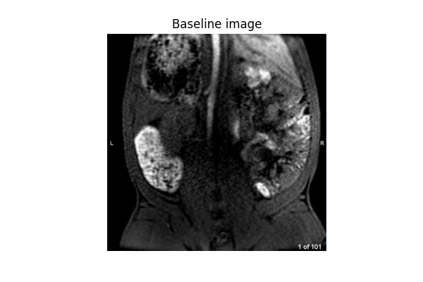

Note
Go to the end to download the full example code.
Dealing with inflow effects#
Nichlas Vous Christensen, Mohsen Redda, Steven Sourbron.
What are inflow effects?#
Inflow effects in the arterial input function (AIF) are a common type of artefact in DCE-MRI which severely biases the results if it is not properly acccounted for. The effect is caused by unsaturated blood flowing into the imaging slab causing an artefactual increase of the baseline signal. A naive analysis of inflow-corrupted data underestimates the arterial concentration and consequently overestimates tissue perfusion parameters.
Inflow effects can be detected visually by inspecting a precontrast image. Since blood has a long T1, arteries should be dark on a T1-weighted image. If they are instead brighter than surrounding tissue, this is evidence of inflow effects. The brightness typically shows a gradient with the vessel being brightest at the edge of the slab where flow-induced enhancement is most severe, then gradually darking as the blood travels down the slab and is pushed into steady-state by the excitation pulses.
Minimizing inflow effects#
The most robust approach to dealing with inflow effects is by eliminating them at the source, by optimizing the acquisition. In abdominal imaging this can often be achieved by positioning the slab coronally and extending the field of view to include the heart.
This may not always be possible though, for instance for prostate imaging where the heart is too far from the region of interest. Even when it is technically possible, such as for liver or renal imaging, it may require compromises in other areas: the approach forbids axial imaging, which is sometimes preferred, and may also come at a cost of spatial resolution.
Other approaches may be possible, such as increasing the flip angle to accelerate transition to steady-state; but this comes with other compromises such as increased tissue heating and reduced signal enhancement.
Correcting inflow effects#
If inflow effects cannot be fully avoided by optimizing the acquisition, or data with inflow effects are analysed retrospectively, the problem must be addressed at image analysis stage.
One approach that has sometimes been applied is to measure the input function deeper down in the slab where inflow effects have largely decayed. This is not always feasible and may cause variability in result for instance due to differences in blood velocity.
This tutorial illustrates two alternative approaches: using a standardised input function rather than attempting to measure it; and correcting for inflow by adding flow-related enhancement in the signal model.
The solutions are illustrated for the use case of MR renography in a minipig with unilateral kidney fibrosis. The data are taken from Bøgh et al (2024).
Reference#
Nikolaj Bøgh, Lotte B Bertelsen, Camilla W Rasmussen, Sabrina K Bech, Anna K Keller, Mia G Madsen, Frederik Harving, Thomas H Thorsen, Ida K Mieritz, Esben Ss Hansen, Alkwin Wanders, Christoffer Laustsen. Metabolic MRI With Hyperpolarized 13C-Pyruvate for Early Detection of Fibrogenic Kidney Metabolism. [DOI].
Setup#
# Import packages
import numpy as np
import matplotlib.pyplot as plt
import matplotlib.image as mpimg
import pydmr
import dcmri as dc
# Read the dataset
dmrfile = dc.fetch('minipig_renal_fibrosis')
data = pydmr.read(dmrfile, 'nest')
rois, pars = data['rois']['Pig']['Test'], data['pars']['Pig']['Test']
Plot data#
Let’s start by plotting the data:
time = pars['TS'] * np.arange(len(rois['Aorta']))
plt.plot(time, rois['Aorta'], 'r-', label='Aorta')
plt.plot(time, rois['LeftKidney'], 'g-', label='LeftKidney')
plt.plot(time, rois['RightKidney'], 'b-', label='RightKidney')
plt.xlabel('Time (sec)')
plt.ylabel('Signal (a.u.)')
plt.legend()
plt.show()
We see a clear difference between left kidney (healthy) and right kidney (fibrotic). We also see that the peak signal change in the aorta is similar to that in the kidney. As peak aorta concentrations in pure blood are always substantially higher than those in tissue, this shows that signal changes underestimate concentrations - consistent with the effect of inflow artefacts.
Verification on the data confirms this suspicion: looking at a precontrast slice through the aorta (below) we see that the aorta is bright compared to the surrounding tissue, and gradually becomes darker as we move further down into the slab - this is the signature sign of inflow artefacts.
Standard analysis#
Ignoring the inflow effects leads to significant bias in the
results. For the kidney
the most common modelling approach is implemented in the function
dcmri.Kidney. Let’s run it on the left kidney and see what we get:
kidney = dc.Kidney(
# Configuration
aif=rois['Aorta'],
dt=pars['TS'],
# General parameters
field_strength=pars['B0'],
agent="gadoterate",
t0=pars['TS'] * pars['n0'],
# Sequence parameters
TS=pars['TS'],
TR=pars['TR'],
FA=pars['FA'],
# Tissue parameters
R10=1/dc.T1(pars['B0'], 'kidney'),
R10a=1/dc.T1(pars['B0'], 'blood'),
)
kidney.train(time, rois['LeftKidney'])
kidney.plot(time, rois['LeftKidney'])
kidney.print_params(round_to=4)
--------------------------------
Free parameters with their stdev
--------------------------------
Arterial mean transit time (Ta): 0.0 (7.8382) sec
Plasma flow (Fp): 0.05 (0.1345) mL/sec/cm3
Plasma volume (vp): 0.3 (0.5037) mL/cm3
Filtration fraction (FF): 0.3 (0.9345)
Tubular mean transit time (Tt): 107.1126 (58.6456) sec
----------------------------
Fixed and derived parameters
----------------------------
Tissue B1-correction factor (B1corr): 1
Arterial B1-correction factor (B1corr_a): 1
Arterial precontrast R1 (R10a): 0.614 Hz
Blood flow (Fb): 0.0909 mL/sec/cm3
Tubular flow (Ft): 0.015 mL/sec/cm3
Plasma mean transit time (Tp): 4.6154 sec
Vascular mean transit time (Tv): 6.0 sec
Extraction fraction (E): 0.2308
The model is not fitting the data because by default the model parameters are not allowed to enter into unphysical regimes. So the model stops converging when they hit their bounds, as can be seen from the plasma flow which converged to its upper bound of 0.05 mL/sec/cm3.
If we free up the parameters then the model will fit, albeit with unphysical values for the parameters:
--------------------------------
Free parameters with their stdev
--------------------------------
Arterial mean transit time (Ta): 3.0 (0.7536) sec
Plasma flow (Fp): 1.1894 (1.5291) mL/sec/cm3
Plasma volume (vp): 0.7688 (0.0259) mL/cm3
Filtration fraction (FF): 0.0074 (0.0092)
Tubular mean transit time (Tt): 48.3554 (5.2081) sec
----------------------------
Fixed and derived parameters
----------------------------
Tissue B1-correction factor (B1corr): 1
Arterial B1-correction factor (B1corr_a): 1
Arterial precontrast R1 (R10a): 0.614 Hz
Blood flow (Fb): 2.1626 mL/sec/cm3
Tubular flow (Ft): 0.0088 mL/sec/cm3
Plasma mean transit time (Tp): 0.6416 sec
Vascular mean transit time (Tv): 0.6464 sec
Extraction fraction (E): 0.0073
The plasma flow now has a value of 1.2 mL/sec/cm3 or 7200 mL/min/100cm3. This is around 40 times higher than what is realistic for a kidney - confirming the massive bias caused by inflow artefacts. This is separately evidenced by the peak concentration around 0.8mM (right of plot) - substantially lower than the values of 4-5mM that are typically seen after injection of a standard dose.
Using a standard input function#
One approach that can always be considered if arterial concentrations are not reliable is to use a modelled rather than a measured input function.
There are no input function models available for minipigs so
our best option is to use one derived for humans and adjust the
parameters. We will use the function dcmri.aif_tristan which is
built on a model of the circulation and thefore defined in terms
of physiological parameters.
We set the cardiac output (CO) to a typical value for the minipig (3.6 L/min or 60 mL/sec). The bolus arrival time (BAT) can be estimated from the peak of the aorta concentration - it does not have to be exact as the value is optimized in the fit. All other parameters are left at default values as no data exist for the minipig:
Now we can use this fixed concentration as input in the kidney model instead of the measured aorta signal. Since the artery signal is not measured in the aorta we will allow the arterial transit time to vary over a larger range than the default of [0, 3] sec:
kidney = dc.Kidney(
# Configuration
ca=ca,
dt=dt,
# General parameters
field_strength=pars['B0'],
agent="gadoterate",
t0=pars['TS'] * pars['n0'],
# Sequence parameters
TS=pars['TS'],
TR=pars['TR'],
FA=pars['FA'],
# Tissue parameters
R10=1/dc.T1(pars['B0'], 'kidney'),
R10a=1/dc.T1(pars['B0'], 'blood'),
)
kidney.set_free(Ta=[0,30])
kidney.train(time, rois['LeftKidney'])
kidney.plot(time, rois['LeftKidney'])
kidney.print_params(round_to=4)
--------------------------------
Free parameters with their stdev
--------------------------------
Arterial mean transit time (Ta): 12.3292 (0.5285) sec
Plasma flow (Fp): 0.05 (0.0203) mL/sec/cm3
Plasma volume (vp): 0.0905 (0.0054) mL/cm3
Filtration fraction (FF): 0.0498 (0.0203)
Tubular mean transit time (Tt): 116.6984 (8.9146) sec
----------------------------
Fixed and derived parameters
----------------------------
Tissue B1-correction factor (B1corr): 1
Blood flow (Fb): 0.0909 mL/sec/cm3
Tubular flow (Ft): 0.0025 mL/sec/cm3
Plasma mean transit time (Tp): 1.725 sec
Vascular mean transit time (Tv): 1.8109 sec
Extraction fraction (E): 0.0474
This now fits a lot better without unphysical parameter values, but the plasma flow still hits the upper limit, and the fit remains poor - indicating the input function does not represent reality very well even after adapting the parameters.
Model-based inflow correction#
An alternative solution is to fit an aorta model to the data and use a signal model (SSI) that accounts for inflow effects.
The CO is set to the same values as for the modelled AIF above, but here this serves as initial guess rather than a fixed parameter:
aorta = dc.Aorta(
# Configuration
sequence='SSI',
heartlung='chain',
organs='comp',
# General parameters
dt=dt,
field_strength=pars['B0'],
t0=pars['TS']*pars['n0'],
# Injection protocol
agent="gadoterate",
weight=pars['weight'],
dose=pars['dose'],
rate=pars['rate'],
# Sequence parameters
TR=pars['TR'],
FA=pars['FA'],
TS=pars['TS'],
# Aorta parameters
CO=60,
R10=1/dc.T1(pars['B0'], 'blood'),
)
aorta.train(time, rois['Aorta'])
aorta.plot(time, rois['Aorta'])
aorta.print_params(round_to=4)
--------------------------------
Free parameters with their stdev
--------------------------------
Bolus arrival time (BAT): 16.6452 (0.1696) sec
Inflow time (TF): 0.2802 (0.0246) sec
Cardiac output (CO): 72.8315 (23.6757) mL/sec
Heart-lung mean transit time (Thl): 16.3275 (0.2062) sec
Organs blood mean transit time (To): 14.2438 (2.4745) sec
Body extraction fraction (Eb): 0.0752 (0.0126)
Heart-lung dispersion (Dhl): 0.0782 (0.0065)
Signal scaling factor (S0): 4914.1799 (476.4379) a.u.
----------------------------
Fixed and derived parameters
----------------------------
This produces a good fit to the data and also reasonable values for the parameters. A cardiac output of 73 mL/sec equates to 4.4 L/min, which is in the right range for a minipig. Also a travel time of 280 msec (Inflow time) from heart to kidneys seems reasonable. The peak concentrations (right) are also in the expected range for a standard injection (5mM).
Kidney model#
We can now use the trained aorta model to generate concentrations and use those as input for the kidney model, instead of the modelled concentration:
t, ca = aorta.conc() # get arterial concentrations
kidney = dc.Kidney(
# Configuration
ca=ca,
t=t,
# General parameters
field_strength=pars['B0'],
agent="gadoterate",
t0=pars['TS']*pars['n0'],
# Sequence parameters
TS=pars['TS'],
TR=pars['TR'],
FA=pars['FA'],
# Tissue parameters
R10=1/dc.T1(pars['B0'], 'kidney'),
R10a=1/dc.T1(pars['B0'], 'blood'),
)
kidney.train(time, rois['LeftKidney'])
kidney.plot(time, rois['LeftKidney'])
kidney.print_params(round_to=4)
--------------------------------
Free parameters with their stdev
--------------------------------
Arterial mean transit time (Ta): 0.803 (0.1935) sec
Plasma flow (Fp): 0.035 (0.0037) mL/sec/cm3
Plasma volume (vp): 0.0985 (0.0033) mL/cm3
Filtration fraction (FF): 0.0812 (0.0078)
Tubular mean transit time (Tt): 47.5675 (2.0172) sec
----------------------------
Fixed and derived parameters
----------------------------
Tissue B1-correction factor (B1corr): 1
Blood flow (Fb): 0.0637 mL/sec/cm3
Tubular flow (Ft): 0.0028 mL/sec/cm3
Plasma mean transit time (Tp): 2.6008 sec
Vascular mean transit time (Tv): 2.812 sec
Extraction fraction (E): 0.0751
This now gives a good fit with reasonable values for all parameters. Let’s run it on the right kidney as well so we can compare parameters:
--------------------------------
Free parameters with their stdev
--------------------------------
Arterial mean transit time (Ta): 1.4288 (0.0873) sec
Plasma flow (Fp): 0.0074 (0.0007) mL/sec/cm3
Plasma volume (vp): 0.1296 (0.0102) mL/cm3
Filtration fraction (FF): 0.0387 (0.0012)
Tubular mean transit time (Tt): 16498.7417 (308336.8495) sec
----------------------------
Fixed and derived parameters
----------------------------
Tissue B1-correction factor (B1corr): 1
Blood flow (Fb): 0.0135 mL/sec/cm3
Tubular flow (Ft): 0.0003 mL/sec/cm3
Plasma mean transit time (Tp): 16.7971 sec
Vascular mean transit time (Tv): 17.4468 sec
Extraction fraction (E): 0.0372
The right (fibrotic) kidney now shows a substantially lower perfusion and function than the left. The perfusion of the left kidney has not hit the maximum value. It is still relatively high (Fp = 0.035 mL/sec/cm3 or 210 mL/min/100mL) but it is possible that it is overcompensating to some extent for the damage on the right kidney.
Joint aorta-kidneys fit#
The method above produces a good solution for these data, but if the volumes of the kidneys are known this can be further refined by performing a joint fit of aorta and both kidneys.
This is not only more compact but should also be more robust as shared parameters can be eliminated and all data are accounted for equally. In this example the volumes are not actually known, so for the purpose of illustration we use a typical value of 85mL:
aorta_kidneys = dc.AortaKidneys(
# Configuration
sequence='SSI',
heartlung='chain',
organs='comp',
agent="gadoterate",
# General parameters
field_strength=pars['B0'],
t0=pars['TS']*pars['n0'],
# Injection protocol
weight=pars['weight'],
dose=pars['dose'],
rate=pars['rate'],
# Sequence parameters
TR=pars['TR'],
FA=pars['FA'],
TS=pars['TS'],
# Aorta parameters
CO=60,
R10a=1/dc.T1(pars['B0'], 'blood'),
# Kidney parameters
vol_lk=85,
vol_rk=85,
R10_lk=1/dc.T1(pars['B0'], 'kidney'),
R10_rk=1/dc.T1(pars['B0'], 'kidney'),
)
# Define time and signal data
t = (time, time, time)
signal = (rois['Aorta'], rois['LeftKidney'], rois['RightKidney'])
# Train model and show result
aorta_kidneys.train(t, signal)
aorta_kidneys.plot(t, signal)
aorta_kidneys.print_params(round_to=4)
--------------------------------
Free parameters with their stdev
--------------------------------
Bolus arrival time (BAT): 16.7422 (0.2853) sec
Inflow time (TF): 0.2801 (0.0133) sec
Cardiac output (CO): 72.762 (12.4426) mL/sec
Heart-lung mean transit time (Thl): 16.2249 (0.3069) sec
Organs blood mean transit time (To): 14.3793 (1.2492) sec
Body extraction fraction (Eb): 0.0751 (0.0071)
Heart-lung dispersion (Dhl): 0.0795 (0.0041)
Renal plasma flow (RPF): 3.3489 (0.7204) mL/sec
Differential renal function (DRF): 0.9085 (0.0212)
Differential renal plasma flow (DRPF): 0.812 (0.0169)
Left kidney arterial mean transit time (Ta_lk): 0.6509 (0.2228) sec
Left kidney plasma volume (vp_lk): 0.099 (0.0186) mL/cm3
Left kidney tubular mean transit time (Tt_lk): 46.9705 (3.3684) sec
Right kidney arterial mean transit time (Ta_rk): 1.4206 (0.2023) sec
Right kidney plasma volume (vp_rk): 0.1294 (0.0175) mL/cm3
Right kidney tubular mean transit time (Tt_rk): 4497.8301 (39890.3818) sec
Aorta signal scaling factor (S0a): 4912.776 (254.2363) a.u.
----------------------------
Fixed and derived parameters
----------------------------
Filtration fraction (FF): 0.0812
Glomerular Filtration Rate (GFR): 0.2719 mL/sec
Left kidney plasma flow (RPF_lk): 2.7194 mL/sec
Right kidney plasma flow (RPF_rk): 0.6295 mL/sec
Left kidney glomerular filtration rate (GFR_lk): 0.247 mL/sec
Right kidney glomerular filtration rate (GFR_rk): 0.0249 mL/sec
Left kidney plasma flow (Fp_lk): 0.032 mL/sec/cm3
Left kidney plasma mean transit time (Tp_lk): 2.838 sec
Left kidney vascular mean transit time (Tv_lk): 3.0958 sec
Left kidney tubular flow (Ft_lk): 0.0029 mL/sec/cm3
Left kidney filtration fraction (FF_lk): 0.0908
Left kidney extraction fraction (E_lk): 0.0833
Right kidney plasma flow (Fp_rk): 0.0074 mL/sec/cm3
Right kidney plasma mean transit time (Tp_rk): 16.8121 sec
Right kidney vascular mean transit time (Tv_rk): 17.4762 sec
Right kidney tubular flow (Ft_rk): 0.0003 mL/sec/cm3
Right kidney filtration fraction (FF_rk): 0.0395
Right kidney extraction fraction (E_rk): 0.038
This produces all results for aorta and kidneys in one go, which also allows to derive some secondary parameters such as differential function which would otherwise have to be computed from separate results. Since the model uses the volumes this can also automatically output important whole kidney parameters such as GFR and RPF. Numaerically the values are similar - though not identical - to those produced from a separate Aorta and Kidneys fit.
Total running time of the script: (0 minutes 31.889 seconds)